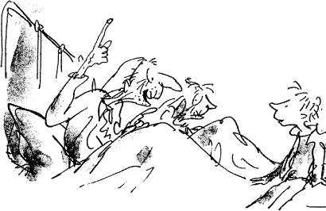
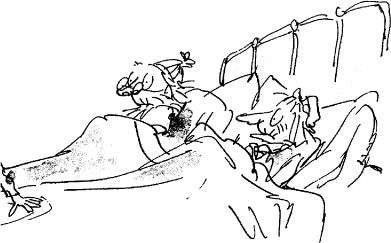

In the evenings, after he had finished his supper of watery cabbage soup, Charlie always went into the room of his four grandparents to listen to their stories, and then afterwards to say good night.
Every one of these old people was over ninety. They were as shrivelled as prunes, and as bony as skeletons, and throughout the day, until Charlie made his appearance, they lay huddled in their one bed, two at either end, with nightcaps on to keep their heads warm, dozing the time away with nothing to do. But as soon as they heard the door opening, and heard Charlie’s voice saying, ‘Good evening, Grandpa Joe and Grandma Josephine, and Grandpa George and Grandma Georgina,’ then all four of them would suddenly sit up, and their old wrinkled faces would light up with smiles of pleasure – and the talking would begin. For they loved this little boy. He was the only bright thing in their lives, and his evening visits were something that they looked forward to all day long. Often, Charlie’s mother and father would come in as well, and stand by the door, listening to the stories that the old people told; and thus, for perhaps half an hour every night, this room would become a happy place, and the whole family would forget that it was hungry and poor.
One evening, when Charlie went in to see his grandparents, he said to them, ‘Is it really true that Wonka’s Chocolate Factory is the biggest in the world?’
‘True?’ cried all four of them at once. ‘Of course it’s true! Good heavens, didn’t you know that? It’s about fifty times as big as any other!’
‘And is Mr Willy Wonka really the cleverest chocolate maker in the world?’
‘My dear boy,’ said Grandpa Joe, raising himself up a little higher on his pillow, ‘Mr Willy Wonka is the most amazing, the most fantastic, the most extraordinary chocolate maker the world has ever seen! I thought everybody knew that!’

‘I knew he was famous, Grandpa Joe, and I knew he was very clever…’
‘Clever!’ cried the old man. ‘He’s more than that! He’s a magician with chocolate! He can make anything – anything he wants! Isn’t that a fact, my dears?’
The other three old people nodded their heads slowly up and down, and said, ‘Absolutely true. Just as true as can be.’
And Grandpa Joe said, ‘You mean to say I’ve never told you about Mr Willy Wonka and his factory?’
‘Never,’ answered little Charlie.
‘Good heavens above! I don’t know what’s the matter with me!’
‘Will you tell me now, Grandpa Joe, please?’
‘I certainly will. Sit down beside me on the bed, my dear, and listen carefully.’

Grandpa Joe was the oldest of the four grandparents. He was ninety-six and a half, and that is just about as old as anybody can be. Like all extremely old people, he was delicate and weak, and throughout the day he spoke very little. But in the evenings, when Charlie, his beloved grandson, was in the room, he seemed in some marvellous way to grow quite young again. All his tiredness fell away from him, and he became as eager and excited as a young boy.
‘Oh, what a man he is, this Mr Willy Wonka!’ cried Grandpa Joe. ‘Did you know, for example, that he has himself invented more than two hundred new kinds of chocolate bars, each with a different centre, each far sweeter and creamier and more delicious than anything the other chocolate factories can make!’
‘Perfectly true!’ cried Grandma Josephine. ‘And he sends them to all the four corners of the earth! Isn’t that so, Grandpa Joe?’
‘It is, my dear, it is. And to all the kings and presidents of the world as well. But it isn’t only chocolate bars that he makes. Oh, dear me, no! He has some really fantastic inventions up his sleeve, Mr Willy Wonka has! Did you know that he’s invented a way of making chocolate ice cream so that it stays cold for hours and hours without being in the refrigerator? You can even leave it lying in the sun all morning on a hot day and it won’t go runny!’
‘But that’s impossible!’ said little Charlie, staring at his grandfather.
‘Of course it’s impossible!’ cried Grandpa Joe. ‘It’s completely absurd! But Mr Willy Wonka has done it!’
‘Quite right!’ the others agreed, nodding their heads. ‘Mr Wonka has done it.’
‘And then again,’ Grandpa Joe went on speaking very slowly now so that Charlie wouldn’t miss a word, ‘Mr Willy Wonka can make marshmallows that taste of violets, and rich caramels that change colour every ten seconds as you suck them, and little feathery sweets that melt away deliriously the moment you put them between your lips. He can make chewing-gum that never loses its taste, and sugar balloons that you can blow up to enormous sizes before you pop them with a pin and gobble them up. And, by a most secret method, he can make lovely blue birds’ eggs with black spots on them, and when you put one of these in your mouth, it gradually gets smaller and smaller until suddenly there is nothing left except a tiny little pink sugary baby bird sitting on the tip of your tongue.’
Grandpa Joe paused and ran the point of his tongue slowly over his lips. ‘It makes my mouth water just thinking about it,’ he said.
‘Mine, too,’ said little Charlie. ‘But please go on.’
While they were talking, Mr and Mrs Bucket, Charlie’s mother and father, had come quietly into the room, and now both were standing just inside the door, listening.
‘Tell Charlie about that crazy Indian prince,’ said Grandma Josephine. ‘He’d like to hear that.’
‘You mean Prince Pondicherry?’ said Grandpa Joe, and he began chuckling with laughter.
‘Completely dotty!’ said Grandpa George.
‘But very rich,’ said Grandma Georgina.
‘What did he do?’ asked Charlie eagerly.
‘Listen,’ said Grandpa Joe, ‘and I’ll tell you.’